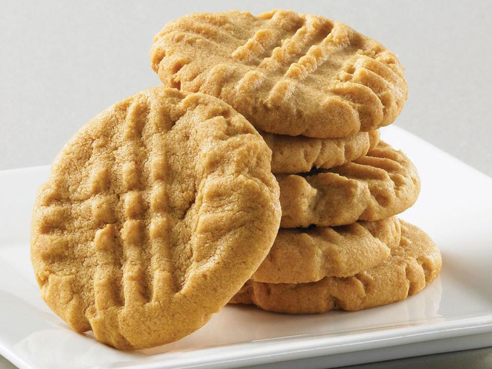

Classic Peanut butter Cookies

Description
Full of Peanut butter flavor, peanut butter cookies are a family favorite. Salty, soft, and sweet, these cookies will melt in your mouth.
- 1 cup firmly packed brown sugar
- ½ cup softened butter
1 large egg
- 1 teaspoon vanilla extract
- 1½ cups all purpose flour
- ½ teaspoon baking powder
- ½ teaspoon baking soda
- ½ teaspoon salt
- granulated sugar
- Heat oven to 350°F
- Combine brown sugar, butter and peanut butter in bowl. Beat at medium speed until well mixed.
Add egg and vanilla; continue beating until well mixed.
Add flour, baking powder, baking soda and salt. Beat at low speed until well mixed.
- Shape dough into 1 1/2-inch balls; roll in sugar.
Place, 2 inches apart, onto ungreased cookie sheets; flatten balls in criss-cross pattern with fork dipped in sugar.
Bake 8-10 minutes or until edges are lightly browned.
home